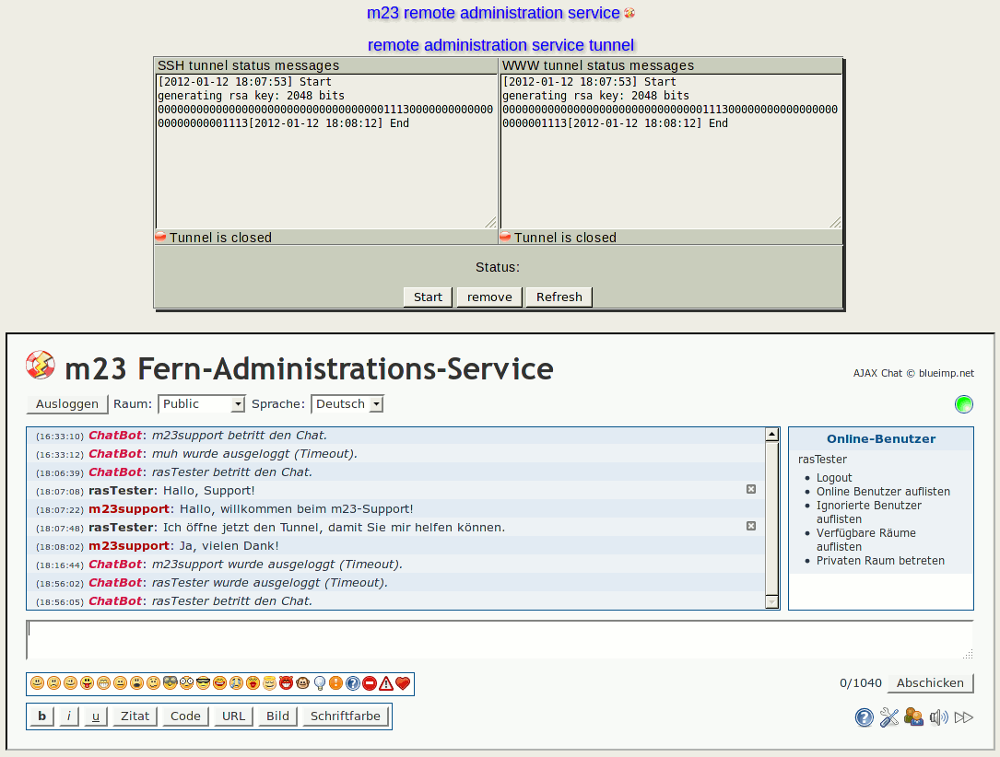

After you have imported the remote administration service code successfully, you can now activate the tunnels for the remote administration service of goos-habermann.de. After the activation, the support of goos-habermann.de can access your m23 server and help you with your administrative duties. As long as the tunnels are open, the support of goos-habermann.de has the same rights as a local m23 server administrator.
In ''remote administration service tunnel'', you can see the current state of both tunnels (''SSH tunnel status messages'' and ''WWW tunnel status messages''). To update the status messages, click on ''Refresh''.
To open the tunnel connections, click on ''Start'', to close them, click on ''Stop''.
If you do not want to continue to use the remote administration service, you can remove the data of the remote administration service from you m23 server by clicking on ''remove''. To be able to use the service anew, you need to reimport the activation code.
root
2017-06-13